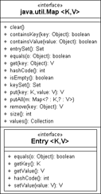

13.4 Assoziative Speicher
Ein assoziativer Speicher verbindet einen Schlüssel mit einem Wert. Java bietet für Datenstrukturen dieser Art die allgemeine Schnittstelle Map mit wichtigen Operationen wie put(key, value) zum Aufbau einer Assoziation und get(key) zum Erfragen eines assoziierten Wertes.
13.4.1 Die Klassen HashMap und TreeMap
Die Java-Bibliothek implementiert assoziativen Speicher mit einigen Klassen, wobei wir unser Augenmerk zunächst auf zwei wichtige Klassen richten wollen:
- Eine schnelle Implementierung ist die Hash-Tabelle (engl. hashtable), die in Java durch java.util.HashMap implementiert ist. Vor Java 1.2 wurde java.util.Hashtable verwendet. Die Schlüsselobjekte müssen »hashbar« sein, also equals() und hashCode() konkret implementieren. Eine besondere Schnittstelle für die Elemente ist nicht nötig.
- Daneben existiert die Klasse java.util.TreeMap, die etwas langsamer im Zugriff ist, doch dafür alle Schlüsselobjekte immer sortiert hält. Sie sortiert die Elemente in einen internen Binärbaum ein. Die Schlüssel müssen sich in eine Ordnung bringen lassen, wozu etwas Vorbereitung nötig ist.
| Beispiel |
|
Ein Assoziativspeicher, dem wir Werte[192](Siehe dazu auch http://www.aldibaran.de/?page_id=13#2.) hinzufügen: Map<String, String> aldiSupplier = new HashMap<String, String>(); Map<String, Number> num = new HashMap<String, Number>(); |
Während also bei den Assoziativspeichern nach dem Hashing-Verfahren eine hashCode()- und equals()-Methode bei den Schlüssel-Objekten essenziell ist, ist das bei den Baum-orientierten Verfahren nicht nötig – hier muss nur eine Ordnung zwischen den Elementen entweder mit Comparable oder Comparator her.
Ein Assoziativspeicher arbeitet nur in einer Richtung schnell. Wenn etwa im Fall eines Telefonbuchs ein Name mit einer Nummer assoziiert wurde, kann die Datenstruktur die Frage nach einer Telefonnummer schnell beantworten. In die andere Richtung dauert es wesentlich länger, weil hier keine Verknüpfung besteht. Sie ist immer nur einseitig. Auf wechselseitige Beziehungen sind die Klassen nicht vorbereitet.
Abbildung 13.4: Klassendiagramm der Schnittstelle Map
Die Klasse HashMap
Die Klasse HashMap eignet sich ideal dazu, viele Elemente unsortiert zu speichern und sie über die Schlüssel schnell wieder verfügbar zu machen. Das interne Hashing-Verfahren ist schnell, eine Sortierung der Schlüssel nach einem gegebenen Kriterium aber nicht möglich.
class java.util.HashMap<K,V> |
- HashMap()
Erzeugt eine neue Hash-Tabelle. - HashMap(Map<? extends K,? extends V> m)
Erzeugt eine neue Hash-Tabelle aus einer anderen Map.
Die Klasse TreeMap und die Schnittstelle SortedMap/NavigableMap
Eine TreeMap implementiert seit Java 6 die Schnittstelle NavigableMap, die wiederum von der Schnittstelle SortedMap[193](Vor Java 6 war dies die implementierte Schnittstelle.) erbt, wobei diese wiederum Map erweitert. Eine NavigableMap sortiert die Elemente eines Assoziativspeichers nach Schlüsseln und bietet Zugriff auf das kleinste oder größte Element mit Methoden wie firstKey(), lastKey() und kann mit subMap() und tailMap() Teilansichten des Assoziativspeichers bilden.
Damit die Schlüssel in einer TreeMap sortiert werden können, gilt das Gleiche wie beim TreeSet: Die Elemente müssen eine natürliche Ordnung besitzen, oder ein externer Comparator muss die Ordnung festlegen.
class java.util.TreeMap<K,V> |
- TreeMap()
Erzeugt eine neue TreeMap, die eine natürliche Ordnung von ihren Elementen erwartet. - TreeMap(Comparator<? super K> comparator)
Erzeugt eine neue TreeMap mit einem Comparator, sodass die Elemente keine natürliche Ordnung besitzen müssen. - TreeMap(Map<? extends K,? extends V> m)
Erzeugt eine TreeMap mit einsortierten Elementen aus m, die eine natürliche Ordnung besitzen müssen. - TreeMap(SortedMap<K,? extends V> m)
Erzeugt eine TreeMap mit einsortierten Elementen aus m und übernimmt von m auch die Ordnung.
Um die Sortierung zu ermöglichen, ist der Zugriff etwas langsamer als über HashMap, aber mit dem Hashing-Verfahren lassen sich Elemente nicht sortieren.
13.4.2 Einfügen und Abfragen der Datenstruktur
Wir haben gesagt, dass die Elemente des Assoziativspeichers Paare aus Schlüssel und zugehörigem Wert sind. Das Wiederfinden der Werte ist effizient nur über Schlüssel möglich.
Daten einfügen
Zum Hinzufügen von Schlüssel-Werte-Paaren dient die Methode put(key, value). Das erste Argument ist der Schlüssel und das zweite Argument der mit dem Schlüssel zu assoziierende Wert. Der Schlüssel und der Wert können null sein.
interface java.util.Map<K,V> |
- V put(K key, V value)
Speichert den Schlüssel und den Wert in der Hash-Tabelle. Falls sich zu diesem Schlüssel schon ein Eintrag in der Hash-Tabelle befand, wird der alte Wert überschrieben und der vorherige Wert zum Schlüssel zurückgegeben (das ist anders als beim Set, wo die Operation dann nichts tut). Ist der Schlüssel neu, liefert put() den Rückgabewert null. Das heißt natürlich auch, dass mit put(key, value) == null nicht klar ist, ob put() einen Wert überschreibt und der alte Wert null war, oder ob noch kein Schlüssel-Werte-Paar in dem Assoziativspeicher lag. - void putAll(Map<? extends K, ? extends V> m)
Fügt alle Schlüssel-Werte-Paare aus m in die aktuelle Map ein. Auch diese Methode überschreibt unter Umständen vorhandene Schlüssel.
Daten auslesen
Um wieder ein Element auszulesen, deklariert Map die Operation get(key). Das Argument identifiziert das zu findende Objekt über den Schlüssel, indem dasjenige Objekt aus der Datenstruktur herausgesucht wird, das im Sinne von equals() mit dem Anfrageobjekt gleich ist. Wenn das Objekt nicht vorhanden ist, ist die Rückgabe null. Allerdings kann auch null der mit einem Schlüssel assoziierte Wert sein, da null als Wert durchaus erlaubt ist.
| Beispiel |
|
Erfrage den Assoziativspeicher nach »zwei«. Das Ergebnis wird ein Number-Objekt sein: Map<String, Number> num = new HashMap<String, Number>(); |
interface java.util.Map<K,V> |
- V get(Object key)
Liefert das mit dem entsprechenden Schlüssel verbundene Objekt. Falls kein passendes Objekt vorhanden ist, liefert die Methode null.
Existiert der Schlüssel, existiert der Wert?
Neben get() kann auch mit einer anderen Methode das Vorhandensein eines Schlüssels getestet werden: containsKey() überprüft, ob ein Schlüssel in der Tabelle vorkommt, und gibt dann ein true zurück. Die Implementierung unterscheidet sich nicht wesentlich von get().
Im Gegensatz zu get() und containsKey(), die das Auffinden eines Werts bei gegebenem Schlüssel erlauben, lässt sich auch nur nach den Werten ohne Schlüssel suchen. Dies ist allerdings wesentlich langsamer, da alle Werte der Reihe nach durchsucht werden müssen. Die Klasse bietet hierzu containsValue() an.
interface java.util.Map<K,V> |
- boolean containsKey(Object key)
Liefert true, falls der Schlüssel in der Hash-Tabelle vorkommt. Den Vergleich auf Gleichheit führt HashMap mit equals() durch. Demnach sollte das zu vergleichende Objekt diese Methode aus Object passend überschreiben. hashCode() und equals() müssen miteinander konsistent sein. Aus der Gleichheit zweier Objekte unter equals() muss auch jeweils die Gleichheit von hashCode() folgen. - boolean containsValue(Object value)
Liefert true, falls der Assoziativspeicher einen oder mehrere Werte enthält, die mit dem Objekt inhaltlich (also per equals()) übereinstimmen.
Einträge und die Map löschen
Zum Löschen eines Elements gibt es remove(), und zum Löschen der gesamten Map gibt es die Methode clear().
interface java.util.Map<K,V> |
- V remove(Object key)
Löscht den Schlüssel und seinen zugehörigen Wert. Wenn der Schlüssel nicht in der Hash-Tabelle ist, so bewirkt die Methode nichts. Im letzten Atemzug wird noch der Wert zum Schlüssel zurückgegeben. - void clear()
Löscht die Hash-Tabelle so, dass sie keine Werte mehr enthält.
Größe und Leertest
Mit size() lässt sich die Anzahl der Werte in der Hash-Tabelle erfragen. isEmpty() entspricht einem size() == 0, gibt also true zurück, falls die Hash-Tabelle keine Elemente enthält.
13.4.3 Über die Bedeutung von equals() und hashCode()
Wenn wir Assoziativspeicher wie eine HashMap nutzen, dann sollte uns bewusst sein, dass Vergleiche nach dem Hashcode und der Gleichheit durchgeführt werden, nicht aber nach der Identität. Die folgenden Zeilen zeigen ein Beispiel:
Listing 13.4: com/tutego/insel/util/map/HashMapAndEquals.java(), main()
Map<Point, String> map = new HashMap<Point, String>();
Point p1 = new Point( 10, 20 );
map.put( p1, "Point p1" );
Die HashMap assoziiert den Punkt p1 mit einer Zeichenkette. Was ist nun, wenn wir ein zweites Punkt-Objekt mit den gleichen Koordinaten bilden und die Map nach diesem Objekt fragen?
Point p2 = new Point( 10, 20 );
System.out.println( map.get( p2 ) ); // ???
Die Antwort ist die Zeichenfolge »Point p1«. Das liegt daran, dass zunächst der Hashcode von p1 und p2 gleich ist. Des Weiteren liefert auch equals() ein true, sodass dies als ein Fund zu werten ist (das liefert noch einmal einen wichtigen Hinweis darauf, dass immer beide Methoden equals() und hashCode() in Unterklassen zu überschreiben sind).
Mit etwas Überlegung folgt dieser Punkt fast zwangsläufig, denn bei einer Anfrage ist ja das zu erfragende Objekt nicht bekannt. Daher kann der Vergleich nur auf Gleichheit, nicht aber auf Identität stattfinden.
Ihr Kommentar
Wie hat Ihnen das <openbook> gefallen? Wir freuen uns immer über Ihre freundlichen und kritischen Rückmeldungen.
 Jetzt bestellen
Jetzt bestellen


{kind=link}